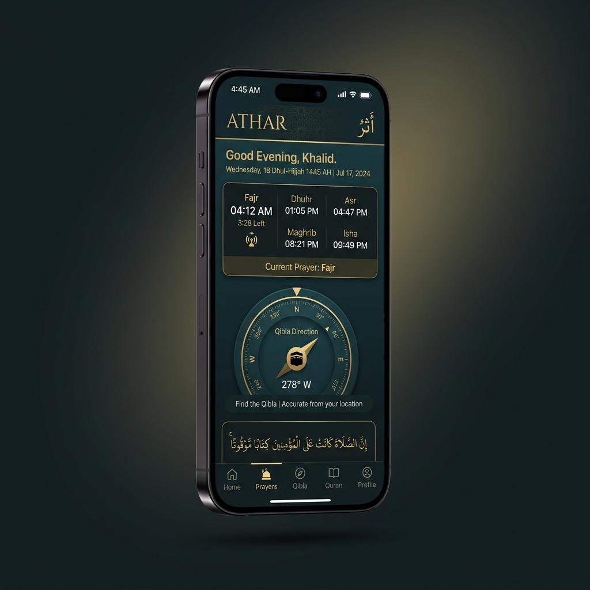

تطبيق "أثر" يقدم لك القرآن الكريم كاملاً، مواقيت الصلاة الدقيقة، مسبحة تفاعلية، أذكار حصن المسلم، وبث الإذاعات الإسلامية المباشر. كل هذا بواجهة عصرية سريعة وبحجم خفيف للغاية.

معظم التطبيقات الإسلامية مجانية لأنك إنت المنتج: إعلانات بين الآيات، أدوات تتبّع بتقرأ سلوكك، وحجم تنزيل ضخم عشان مكتبات إعلانية مالهاش علاقة بالعبادة. «أثر» اتبنى على العكس من ده تمامًا.
مفيش إعلان واحد، ولا أداة تحليلات واحدة، ولا حساب تسجّل بيه، ولا صلاحية بتُطلب من غير ما تكون الميزة نفسها محتاجاها. وكل حرف بتقراه أو تسبّحه بيفضل على جهازك إنت.
تخلص من الإعلانات المزعجة واستمتع بتجربة إسلامية نقية بنسبة 100% مع ميزات حصرية مدمجة.
اضغط على المسبحة للتسبيح. تدعم المؤثرات الصوتية والاهتزاز الخفيف لمحاكاة المسبحة الواقعية تماماً كما في التطبيق.
ملخّص صادق في أربع نقاط — والتفاصيل الكاملة في صفحة السياسة.
الشيء الوحيد الذي يغادر جهازك هو إحداثيات موقعك، وتُرسَل مشفّرة إلى واجهة
AlAdhan
لحساب مواقيت الصلاة، ثم تُخزَّن النتيجة على جهازك لتقليل الطلبات.
اقرأ سياسة الخصوصية كاملة ←
الأسئلة التي تصلنا أكثر من غيرها، بإجابات مباشرة.
حمّل تطبيق "أثر" مجاناً وبدون أي إعلانات أو عمليات شراء داخل التطبيق. رفيقك الروحي في جيبك أينما كنت.